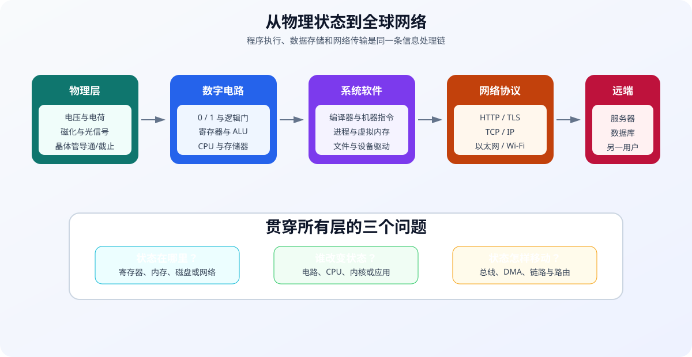
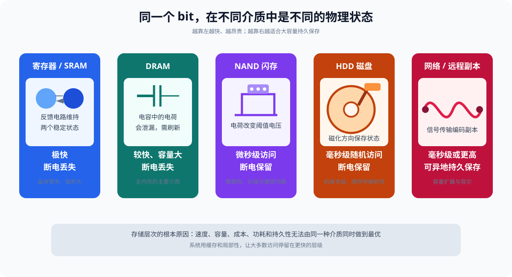
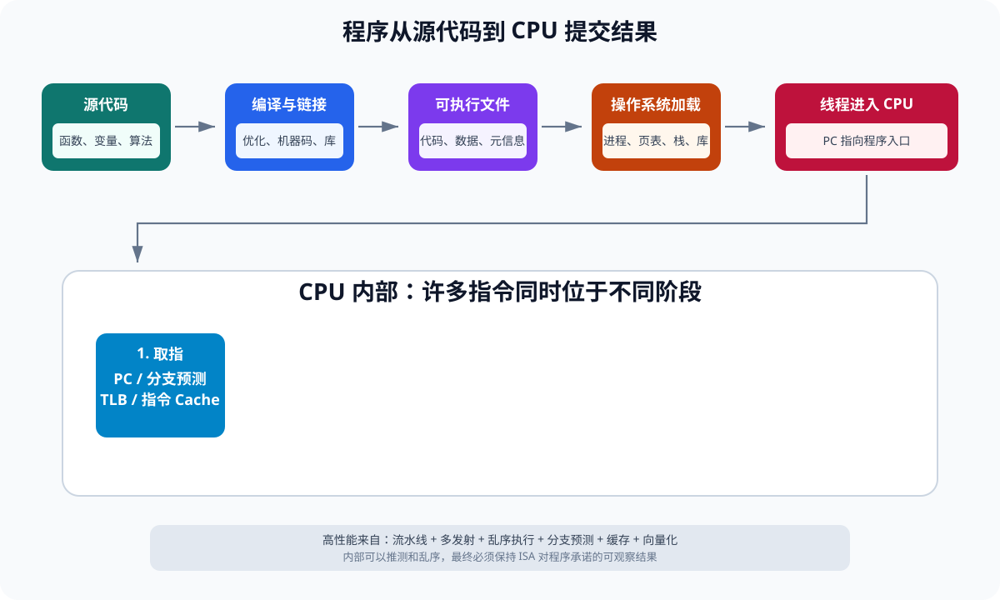
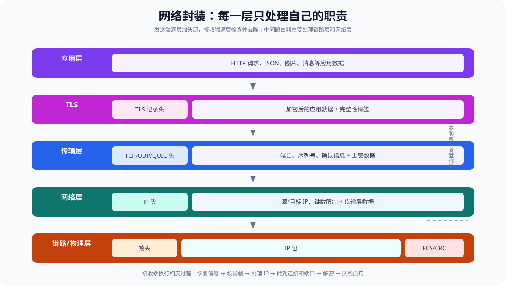
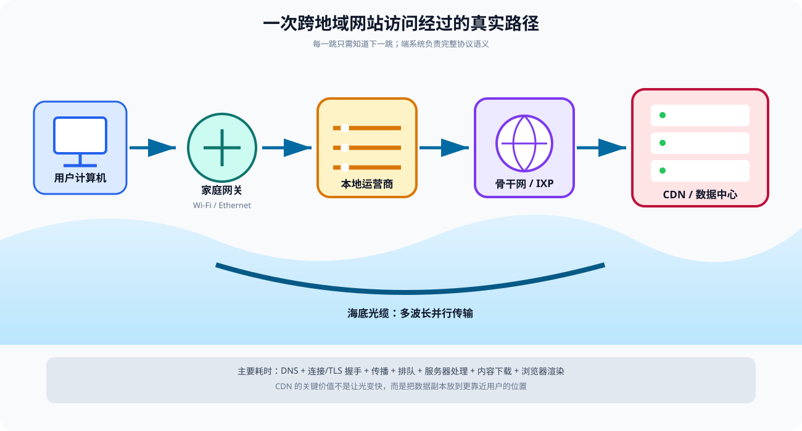
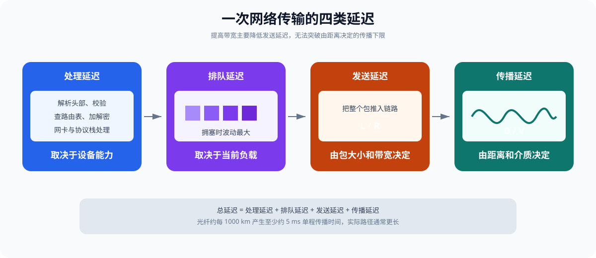

计算机底层原理：程序、数据与网络如何从 0 到 1 运转
本文试图回答三个看似简单、实际贯穿整个计算机科学的问题：
- 一段程序究竟是怎样被执行的？
- 文字、图片和程序究竟存在哪里，又是怎样保存的？
- 数据怎样在极短时间内到达世界另一端？
答案不是“CPU 在计算”“硬盘在存储”“互联网在传输”这么简单。真实过程是一条跨越物理、电路、体系结构、操作系统和网络协议的长链：
电子与电磁波
↓
晶体管与逻辑门
↓
寄存器、CPU、内存和设备
↓
机器指令与操作系统
↓
进程、文件与网络套接字
↓
网卡、交换机、路由器、光纤
↓
世界另一端的计算机执行相反过程
理解这条链以后，许多问题会自然得到答案：
- 为什么所有数据都能变成
0和1？ - 为什么 CPU 一秒可以执行几十亿个时钟周期？
- 为什么内存断电会丢数据，而 SSD 不会？
- 为什么同一个程序有时快、有时慢？
- 为什么北京访问上海通常比访问纽约快？
- 为什么“千兆宽带”不代表下载延迟只有千分之一秒？
- 为什么网络数据不会轻易发错机器或交给错误程序？
本文从物理世界出发，逐层建立抽象。阅读时不必一次记住所有术语，先抓住三条主线：
- 状态：信息当前保存在哪里？
- 变换：谁在按照什么规则改变信息？
- 传输：信息通过什么介质从哪里移动到哪里？

一、起点：计算机本质上是什么
从最底层看，计算机是一台能够自动完成以下循环的物理机器：
读取状态 → 按规则计算 → 保存新状态 → 再读取
这里的“状态”可以是：
- 某根导线上的高低电压；
- 晶体管导通或截止；
- 寄存器里的 64 个二进制位；
- 内存某地址中的字节；
- SSD 浮栅中保存的电荷量；
- 网络链路上正在传播的电磁波；
- 操作系统记录的进程、文件和连接信息。
计算机并不理解“照片”“微信消息”或“程序”。它只是在物理定律允许的范围内，可靠地保存、变换和搬运状态。人类通过一层层编码规则，为这些状态赋予了意义。
1.1 为什么使用二进制
现实中的电压是连续的，例如可能是 0.03 V、0.82 V 或 1.17 V。如果直接要求电路精确区分无数电压，轻微噪声、温度变化和制造误差都会破坏结果。
数字电路把连续电压划分成两个容错区间：
较低电压范围 → 逻辑 0
较高电压范围 → 逻辑 1
中间区域 → 不保证结果，应尽快越过
所以逻辑 0 和 1 不是“没有电”和“有电”的绝对描述，而是电路对物理信号的抽象解释。二进制的优势是：
- 两种状态容易制造和区分；
- 两个状态之间可以保留较大的噪声容限；
- 布尔代数能够完整描述二值逻辑；
- 存储、复制、校验和传输都容易工程化。
1.2 bit、Byte 和信息量
bit（位）：一个二进制状态，取值为0或1。Byte（字节）：通常为 8 bit，可表示2^8 = 256种组合。KB/MB/GB/TB：描述数据容量。bit/s：描述链路每秒传送多少位。
必须注意容量单位和网络速率单位：
1 Byte = 8 bit
100 Mb/s 理论上最多约等于 12.5 MB/s
1 Gb/s 理论上最多约等于 125 MB/s
实际应用吞吐量还要扣除协议头、确认、重传和设备处理等开销。
1.3 位模式为什么能表示一切
一个位模式本身没有固有含义。例如：
01000001
它可以被解释为：
- 无符号整数
65； - ASCII 字符
A； - 图片中的亮度；
- 某条机器指令的一部分；
- 压缩文件中的一个字节。
数据 = 位模式 + 解释规则。
文件格式、字符编码、机器指令集、网络协议，本质上都是对位模式解释规则的约定。
二、从电到逻辑：晶体管如何变成计算能力
2.1 晶体管是可控制的电子开关
现代数字芯片主要使用 MOSFET。可以先把它理解为有三个关键端子的开关：
- 栅极：控制端；
- 源极和漏极：电流通路的两端；
- 栅极电压达到条件时，源漏之间形成或关闭导电通道。
芯片通常使用 CMOS 技术，把 NMOS 与 PMOS 晶体管互补组合。最简单的 CMOS 反相器实现 NOT：
输入低 → 上方晶体管导通 → 输出高
输入高 → 下方晶体管导通 → 输出低
理想静止状态下，CMOS 不需要持续让大量电流从电源流向地，因此能以较低静态功耗集成海量晶体管。实际仍有漏电和切换功耗。
2.2 从晶体管到逻辑门
组合不同晶体管，可以构造逻辑门：
| 逻辑门 | 规则 | 用途 |
|---|---|---|
| NOT | 输入取反 | 反相 |
| AND | 全部为 1 才输出 1 | 条件同时成立 |
| OR | 至少一个为 1 就输出 1 | 条件至少成立一个 |
| XOR | 输入不同时输出 1 | 加法、奇偶校验 |
| NAND | AND 后取反 | 可构造任意布尔逻辑 |
例如，一位半加器只需两个核心表达式：
和 Sum = A XOR B
进位 Carry = A AND B
加入低位传来的进位 Cin，就得到全加器：
Sum = A XOR B XOR Cin
Cout = (A AND B) OR (Cin AND (A XOR B))
把 64 个全加器连接起来，就能计算 64 位加法。真实高性能加法器会用超前进位、前缀树等结构减少等待，而不是让进位简单地逐位爬过 64 级。
2.3 组合逻辑与时序逻辑
逻辑电路分为两大类：
组合逻辑
输出只由当前输入决定，例如加法器、比较器、译码器和多路选择器。
时序逻辑
输出还与过去状态有关，例如锁存器、触发器、寄存器、计数器和状态机。
如果只有组合逻辑，输入一消失，结果也随之消失。计算机之所以能“记住”，是因为反馈电路和存储器件可以维持状态。
2.4 时钟做了什么
同步数字电路使用周期性时钟信号协调大量状态更新：
时钟边沿到来前：组合逻辑根据旧状态计算
时钟边沿到来时：寄存器锁存计算结果
下一个周期：新状态继续进入组合逻辑
假设 CPU 主频为 3 GHz：
每秒约 30 亿个时钟周期
单个周期约 1 / 3,000,000,000 秒 ≈ 0.33 ns
但这不表示“一条指令固定耗时 0.33 ns”。一条指令可能跨越多个流水线阶段；反过来，现代 CPU 也可能在一个周期内完成多条指令。
2.5 为什么不能无限提高主频
CMOS 切换的动态功耗可粗略表示为：
P_dynamic ≈ α × C × V² × f
其中：
α：电路翻转活动率；C：等效电容；V：供电电压；f：时钟频率。
提高频率会增加功耗；为了支持更高频率，往往还需提高电压，而功耗与电压平方相关。功耗最终变成热量，散热能力限制了频率继续增长。导线延迟、晶体管切换时间和时钟偏斜也构成物理限制。
因此现代处理器更依赖多核、缓存、流水线、乱序执行、向量计算和专用加速器，而不是只提高频率。
三、数据如何编码：数字、文字、图片与声音
3.1 整数
一个 n 位无符号整数可表示：
0 ～ 2^n - 1
8 位无符号整数：
00000000 = 0
00000001 = 1
11111111 = 255
有符号整数通常使用补码。8 位补码范围为 -128 ～ 127：
00000101 = +5
11111011 = -5
补码让同一套加法电路可以完成有符号和无符号加减。有限位宽意味着运算本质上是模运算，超出范围会截掉高位，所以程序必须关注整数溢出。
3.2 浮点数
IEEE 754 浮点数把有限位分成：
符号位 | 指数 | 有效数
其基本思想类似科学计数法：
(-1)^符号 × 有效数 × 2^指数
二进制浮点数只能精确表示有限位二进制小数。十进制 0.1 转成二进制是无限循环：
0.1₁₀ = 0.0001100110011...₂
因此 0.1 + 0.2 的实际浮点结果可能略偏离 0.3。这不是 CPU 算错，而是有限编码对实数的近似。
3.3 字符和文本
Unicode 为字符分配码点，UTF-8 再把码点编码成一个或多个字节：
A → U+0041 → 41
中 → U+4E2D → E4 B8 AD
乱码通常意味着发送方和接收方使用了不同编码规则，而不是字节自己改变了。
3.4 图片
最简单的位图可以看成像素矩阵。每个像素记录红、绿、蓝等颜色通道：
像素(x, y) = R + G + B + 可选透明度 A
例如 1920×1080、每像素 24 bit 的未压缩图片大约需要：
1920 × 1080 × 24 / 8 ≈ 5.93 MB
PNG、JPEG 等格式用压缩规则减少重复或不重要的信息。解码器根据文件格式把字节重新还原为像素。
3.5 声音和视频
声音是连续空气振动。数字音频通过：
- 按固定频率采样；
- 把每次测得的振幅量化成整数；
- 按格式编码和压缩。
例如 44.1 kHz 表示每秒采样 44100 次。视频则是一系列图像帧加音频，编码器利用帧内和帧间相似性压缩。
3.6 程序也是数据
机器指令同样被编码为字节。某段字节被 CPU 按 ISA 规则取出并译码时，它是“指令”；被文本编辑器查看时，它只是普通数据。
这就是“存储程序”思想：
指令和数据都能放在存储器中，区别在于 CPU 如何使用它们。
四、数据究竟如何被存住
“保存一个 bit”意味着让某种物理状态在一段时间内稳定存在，并且以后能够测出它。
不同存储介质选择了不同物理状态：
| 层级 | 典型介质 | 保存方式 | 断电后 |
|---|---|---|---|
| 寄存器 | 触发器 | 电路反馈状态 | 丢失 |
| SRAM Cache | 双稳态晶体管单元 | 电路反馈状态 | 丢失 |
| DRAM 内存 | 电容电荷 | 有/无或不同电荷 | 丢失，且需刷新 |
| NAND 闪存 | 浮栅/电荷俘获层 | 阈值电压区间 | 保留 |
| HDD | 磁性材料 | 磁化方向 | 保留 |
| 光盘 | 反射特征 | 凹坑或材料相变 | 保留 |

4.1 寄存器与 SRAM
CPU 寄存器通常由触发器构成，速度极快，但每 bit 需要较多晶体管，占用面积大。
CPU Cache 常使用 SRAM。典型 SRAM 单元利用多个晶体管形成双稳态结构：
状态 A 会自我维持
状态 B 也会自我维持
读写线用于读取或强制改变状态
只要持续供电，状态就能保持，而且不需像 DRAM 那样周期刷新。代价是密度低、成本高。
4.2 DRAM
DRAM 单元通常可抽象为“一个电容加一个访问晶体管”：
- 电容有电荷或无电荷代表状态；
- 字线打开访问晶体管；
- 位线和感应放大器检测极小电压差；
- 读取具有破坏性，读后需要恢复；
- 电荷会泄漏，因此必须定期刷新。
DRAM 按通道、Rank、Bank、行、列组织。一次访问并非直接找到某个字节，而大致经历：
激活一行 → 整行进入行缓冲区 → 选择列读写 → 必要时预充电并切换行
连续访问同一打开行通常更快；随机访问不同 Bank 和行会增加延迟。内存控制器会调度请求，以提高并行度和带宽利用率。
4.3 NAND 闪存与 SSD
闪存通过晶体管中保存的电子数量改变其阈值电压。控制器读取阈值电压区间，再解释成 bit：
- SLC：每单元 1 bit，2 个电压状态；
- MLC：每单元 2 bit，4 个状态；
- TLC：每单元 3 bit，8 个状态；
- QLC：每单元 4 bit，16 个状态。
每个单元保存的 bit 越多，容量越高，但电压区间更密，通常耐久性、速度和容错空间更差。
NAND 的关键限制是：
- 以页为单位读写；
- 不能随意原地覆盖，写前通常要按更大的块擦除；
- 擦写次数有限；
- 单元会出现错误和电荷漂移。
SSD 控制器因此需要：
- FTL：把操作系统逻辑块地址映射到实际闪存页；
- 垃圾回收：搬走有效页并擦除旧块；
- 磨损均衡：避免某些块过早损坏；
- ECC：检测和纠正位错误；
- 预留空间和坏块管理。
所以“把文件覆盖到原地址”通常只是操作系统看到的逻辑效果，底层数据可能写到了另一物理页。
4.4 HDD
HDD 在旋转盘片的磁性表面保存磁化状态。磁头移动到目标磁道，等待目标扇区转到磁头下方，再读写数据。
其延迟主要来自：
- 寻道时间；
- 旋转等待；
- 实际传输时间。
因此 HDD 顺序读写远快于大量小块随机读写。SSD 没有机械寻道，但仍受闪存、控制器和接口限制。
4.5 为什么需要存储层次
不存在同时满足“最快、最大、最便宜、永久保存”的单一介质。系统采用层次结构：
寄存器
↓ 更大、更慢
L1 / L2 / L3 Cache
↓
DRAM
↓
SSD / HDD
↓
远程存储 / 备份
大致数量级会随硬件变化，但直觉可记为：
| 操作 | 粗略数量级 |
|---|---|
| CPU 简单运算 | 亚纳秒到数纳秒 |
| L1 Cache | 约 1 ns |
| L2/L3 Cache | 数纳秒到数十纳秒 |
| DRAM | 数十到上百纳秒 |
| NVMe SSD | 数十到数百微秒 |
| HDD 随机访问 | 数毫秒 |
| 跨洲网络往返 | 数十到数百毫秒 |
这是一条巨大的时间鸿沟。若把一次 CPU 运算类比为 1 秒，那么一次磁盘随机访问可能像等待数周甚至数月。因此高性能系统的核心工作经常不是“让加法更快”，而是避免去更慢的层级等待。
五、文件如何从程序进入 SSD
假设程序执行：
with open("hello.txt", "w", encoding="utf-8") as file:
file.write("你好")
底层不会由 Python 直接操作闪存晶体管，而是层层委托：
Python 运行时
↓
系统调用 write
↓
操作系统虚拟文件系统
↓
具体文件系统，如 NTFS/ext4/APFS
↓
页缓存与块 I/O 层
↓
存储设备驱动
↓
NVMe/SATA 控制器
↓
SSD 控制器、FTL、NAND 闪存
5.1 文件系统做什么
文件系统不只保存文件内容，还管理：
- 文件名和目录树；
- 文件大小、时间、权限；
- 文件数据位于哪些逻辑块；
- 空闲空间；
- 崩溃恢复所需的日志或元数据。
“文件”是操作系统提供的逻辑抽象。设备看到的通常是块编号和读写命令，并不知道 hello.txt 是什么。
5.2 写入返回不一定等于永久落盘
为提高性能，操作系统通常先把数据写入内存页缓存，并把页面标记为“脏”，稍后批量写入设备。
因此：
write 返回
≠ 数据一定已经进入 NAND
≠ 突然断电后一定不会丢
需要持久性保证时，程序要使用 fsync 等机制，请求把相关数据和必要元数据推进到稳定存储。即便如此，最终保证还依赖设备是否正确处理缓存刷新和掉电保护。
5.3 删除文件发生了什么
一般删除首先移除目录项或释放文件占用的逻辑块，并不立即逐 bit 擦除所有物理内容。SSD 还存在 FTL、垃圾回收和 TRIM，因此“逻辑上已删除”与“所有物理残留已不可恢复”不是同一件事。
六、程序从源代码变成可执行文件
人类编写：
int add(int a, int b) {
return a + b;
}
CPU 并不认识 int、函数名和花括号。以传统编译语言为例，转换链路是：
源代码
↓ 预处理
展开头文件、宏、条件编译
↓ 编译
词法/语法/语义分析、优化、生成汇编或中间代码
↓ 汇编
汇编指令编码为机器码，生成目标文件
↓ 链接
合并目标文件和库，解析符号、重定位地址
↓
可执行文件
编译器最终可能生成类似的概念指令：
ADD result_register, arg_register_1, arg_register_2
RET
具体机器字节由 ISA 决定。x86-64、ARM64 和 RISC-V 使用不同指令编码，同一个可执行文件通常不能直接跨 ISA 运行。
6.1 ISA：软件与 CPU 的契约
指令集体系结构（ISA）规定：
- 指令如何编码、分别做什么；
- 有哪些软件可见寄存器；
- 支持哪些数据类型和寻址方式；
- 内存访问、异常、中断如何表现；
- 原子操作和内存顺序规则。
微体系结构则回答“某一款 CPU 内部如何高效实现这套契约”。两款 CPU 可以都运行 x86-64 程序，但内部缓存、流水线和执行单元完全不同。
6.2 解释器、字节码和 JIT
并非所有语言都直接提前生成本机机器码：
- Python 解释器读取字节码，并由解释器的机器指令完成实际工作；
- Java/C# 常先生成虚拟机字节码；
- JIT 在运行时把热点代码编译成本机机器码；
- JavaScript 引擎混合解释、分析和 JIT 优化。
无论经过多少层，CPU 最终执行的仍是当前 ISA 的机器指令。
七、双击程序之后发生了什么
以启动一个可执行程序为例，操作系统大致执行：
- 检查文件格式、权限和体系结构；
- 创建进程及内核管理结构；
- 建立新的虚拟地址空间；
- 把程序代码、只读数据、可写数据映射进去；
- 映射动态链接库；
- 创建用户栈，放入参数和环境变量；
- 准备堆区域、线程状态和标准输入输出；
- 把 CPU 寄存器中的指令指针设为程序入口；
- 调度该线程运行。
7.1 进程不是“运行中的文件”这么简单
进程是操作系统对运行程序的资源容器，通常拥有：
- 独立虚拟地址空间；
- 一个或多个线程；
- 打开的文件和网络连接；
- 安全令牌、用户身份和权限；
- 信号、句柄、计时器等内核状态。
线程是实际被调度到 CPU 上执行的指令流。多个线程可以共享同一进程的内存和资源。
7.2 虚拟地址不等于物理位置
程序看到的是虚拟地址，例如：
0x00007FF6...
CPU 的 MMU 使用页表把虚拟页映射到物理页框。地址转换结果会缓存在 TLB 中：
虚拟地址 = 虚拟页号 + 页内偏移
↓ 查 TLB/页表
物理地址 = 物理页框号 + 原页内偏移
虚拟内存带来：
- 进程隔离；
- 读、写、执行权限控制；
- 统一连续的地址视图；
- 按需分配；
- 文件映射和共享内存；
- 写时复制。
7.3 缺页异常
若页表中暂时没有可用映射，CPU 会触发缺页异常，进入内核。操作系统可能：
- 分配一个全零物理页；
- 从可执行文件或映射文件读取页面；
- 从交换空间换入页面；
- 为写时复制创建私有副本；
- 判定访问非法并终止进程。
缺页异常是虚拟内存的正常组成部分，不一定是程序错误。
7.4 用户态与内核态
普通程序运行在受限的用户态，不能直接：
- 修改页表；
- 任意读写磁盘和网卡寄存器；
- 关闭中断；
- 访问其他进程内存。
程序通过系统调用请求内核服务。CPU 执行专用指令后：
保存用户态必要现场
→ 切换到更高特权级
→ 跳入预先规定的内核入口
→ 内核检查参数和权限
→ 完成操作
→ 恢复并返回用户态
特权隔离是系统稳定性和安全性的基础。
八、CPU 如何执行一条指令
最简单的教学模型把执行拆成五步：
取指 IF → 译码 ID → 执行 EX → 访存 MEM → 写回 WB

8.1 取指
程序计数器 PC/IP 保存下一条指令地址。CPU：
- 用虚拟地址查询 TLB；
- 查询 L1 指令缓存；
- 命中则取得指令字节；
- 未命中则请求更低级缓存或内存；
- 预测下一条取指地址。
8.2 译码
译码器从机器字节识别：
- 操作码；
- 源寄存器和目标寄存器；
- 立即数；
- 是否读写内存；
- 是否跳转。
复杂 x86 指令常被转换成内部微操作，后续执行核心处理的是这些更规则的微操作。
8.3 读取操作数与寄存器重命名
CPU 从寄存器或指令立即数字段取得输入。高性能 CPU 会做寄存器重命名，把 ISA 中数量有限的逻辑寄存器映射到更多物理寄存器，消除“名字相同但数据并不依赖”的假依赖。
8.4 执行
不同执行单元负责不同任务：
- ALU：整数加减、位运算、比较；
- 乘除单元：整数乘除；
- FPU：浮点计算；
- SIMD/向量单元：一条指令并行处理多个元素；
- 地址生成单元：计算内存地址；
- Load/Store 单元：读写缓存；
- 分支单元：判断跳转方向和目标。
8.5 访存
Load/Store 指令先访问 L1 数据缓存。CPU 通常以缓存行为单位在缓存层次间搬运数据，常见缓存行大小为 64 Byte。
地址常被拆成：
Tag | Set Index | Block Offset
Cache 用组索引找到候选位置，用 Tag 判断目标缓存行是否在其中，再用偏移选出所需字节。
8.6 写回与提交
执行结果先写入物理寄存器或相关缓冲区。现代乱序处理器最终按程序顺序提交：
- 提交前，推测结果还可以被取消；
- 提交后，结果成为体系结构可见状态；
- 若更早指令发生异常，后续指令不应看起来已经生效。
按序提交让 CPU 同时拥有内部乱序效率和外部顺序语义。
九、CPU 为什么算得这么快
CPU 的速度不是来自单一原因，而是多种机制叠加。
9.1 极短的物理距离
芯片内部关键部件相距毫米甚至微米。信号不需要跨越机械结构和长距离线路。尽管芯片导线中的有效传播和门延迟不能忽略，但物理距离极短。
9.2 海量晶体管并行工作
现代高性能处理器包含数十亿乃至更多晶体管。它们不是排成一列逐个工作，而是大规模同时翻转：
- 一组电路取指；
- 一组电路译码；
- 多个执行单元同时运算；
- 缓存并行查找；
- 预取器提前搬运数据；
- 其他核心执行其他线程。
9.3 流水线
流水线类似生产线。若一条指令要经过多个阶段，CPU 不必等待它全部结束才开始下一条：
周期 1：指令 A 取指
周期 2：A 译码，B 取指
周期 3：A 执行，B 译码，C 取指
流水线主要提高吞吐量，不一定同比降低单条指令延迟。
9.4 超标量与乱序执行
超标量处理器每周期可以取出、译码、发射和完成多条微操作。乱序调度会优先执行操作数已经准备好的工作：
A：从内存读取，等待较久
B：依赖 A，必须等待
C：与 A、B 无关，可以先执行
CPU 先做 C，避免执行单元闲置，最后仍按原顺序提交。
9.5 分支预测和推测执行
遇到 if 或循环分支时，CPU 在条件尚未算出前预测下一条路径并继续工作：
- 猜对：节省等待；
- 猜错：清除错误路径工作，恢复正确路径，损失多个周期。
现代预测器利用历史行为、地址模式等信息，常能取得很高准确率。但难以预测的分支仍会显著拖慢程序。
9.6 Cache 与局部性
CPU 和 DRAM 的速度差距很大。Cache 把近期和附近的数据保存在离核心更近的位置，利用：
- 时间局部性：刚用过的数据可能再次使用；
- 空间局部性：刚访问地址附近的数据可能马上使用。
顺序扫描数组通常快于随机追逐指针，因为一次缓存行搬运能覆盖多个连续元素，预取器也更容易识别模式。
9.7 SIMD、GPU 和专用硬件
CPU 的向量指令可以一条命令处理多个数据。GPU 则使用大量较简单的并行执行单元，适合图形、矩阵和机器学习任务。视频编解码器、加密单元、NPU 等专用电路通过固定或半固定数据通路，以更低能耗获得高吞吐量。
9.8 快不等于所有操作都快
CPU 加法很快，但程序常在等待：
- Cache 未命中；
- DRAM；
- 分支预测失败；
- 锁；
- 缺页；
- SSD；
- 网络；
- 其他服务。
性能近似公式：
CPU 时间 = 指令数 × 平均每条指令周期数 CPI / 时钟频率
真正优化要同时考虑算法、指令数、并行度、局部性和等待时间，不能只看 GHz。
十、操作系统如何让多个程序“同时运行”
CPU 核心在某一瞬间执行一个硬件线程的指令流。操作系统调度器把可运行线程分配到各核心：
线程 A 运行一小段
→ 定时器中断
→ 内核保存 A 的寄存器
→ 恢复线程 B 的寄存器
→ B 继续运行
这叫上下文切换。切换本身有成本，还可能扰动 Cache 和 TLB。
多核机器可以真正同时执行多个线程；单核机器通过快速切换制造并发推进的效果。
10.1 中断
设备无需让 CPU 一直询问“完成了吗”。操作系统向设备发出工作后，CPU 可以执行其他任务。设备完成时发送中断：
设备发出中断
→ CPU 暂停当前普通执行
→ 保存必要现场
→ 运行内核中断处理逻辑
→ 记录完成、唤醒等待线程
→ 返回原任务或调度其他任务
10.2 DMA
大量数据若由 CPU 一个字节一个字节搬运会很浪费。DMA 允许设备控制器直接在设备与内存之间传输：
- CPU/驱动准备内存缓冲区；
- 配置设备的地址、长度和方向；
- 设备通过总线读写内存；
- 完成后中断 CPU。
CPU 仍负责控制和协议，但不必亲自搬每个字节。
十一、网络的本质：远距离搬运编码后的 bit
网络通信仍然遵循同一原则：
应用数据
→ 加上多层控制信息
→ 编码成物理信号
→ 沿介质传播
→ 远端恢复 bit
→ 逐层去掉控制信息
→ 交给目标应用
网络不是一根从你的电脑直连世界所有电脑的线，而是由终端、交换机、路由器、运营商网络、海底光缆、数据中心等组成的分组交换系统。
11.1 三种常见物理信号
双绞线
通过铜线中的差分电信号传输。接收端关心两根线之间的电压差，这能抵抗共同噪声。双绞结构还能减小电磁干扰。
光纤
发送端激光器把电信号调制为光脉冲，光在纤芯中传播；接收端光电探测器把光重新变成电信号。工程上会使用更复杂的调制、波分复用和相干检测，不只是简单“亮代表 1，灭代表 0”。
无线
天线把高频电信号转换为电磁波，通过改变载波的幅度、频率、相位或其组合编码数据。接收天线取得微弱信号，经放大、同步、解调和纠错恢复 bit。
11.2 信号并不是电子从中国跑到美国
铜缆中远距离传播的是电磁场和能量变化，而不是某个电子从发送端一路冲到接收端。导体中的电子漂移速度通常很慢，但电磁信号沿导线传播很快。
光纤中传播的是光信号。真空光速约为：
c ≈ 299,792 km/s
光在玻璃中的速度较慢，常可粗略按约 200,000 km/s 理解，即约为真空光速的三分之二。
十二、网络为什么要分层
一个应用不应亲自处理激光器、无线调制、路由选择和丢包重传。网络通过分层隐藏复杂性。
常用的 TCP/IP 视角：
| 层次 | 典型协议/对象 | 解决的问题 |
|---|---|---|
| 应用层 | HTTP、DNS、TLS、SSH | 应用如何表达请求和数据 |
| 传输层 | TCP、UDP、QUIC | 进程到进程传输、可靠性与拥塞控制 |
| 网络层 | IPv4、IPv6、ICMP | 跨网络寻址与路由 |
| 链路层 | Ethernet、Wi-Fi | 同一链路或局域网中的帧传输 |
| 物理层 | 铜缆、光纤、无线电 | bit 如何变成实际信号 |
每层只依赖下一层提供的能力，并为上一层提供抽象。
12.1 封装
假设浏览器发送一段 HTTP 数据，各层会添加自己的头部：
[以太网头 [IP 头 [TCP 头 [TLS 记录 [HTTP 数据]]]]]
可简化理解为：
- HTTP 描述请求语义；
- TLS 提供加密、完整性与身份认证；
- TCP 提供可靠有序字节流；
- IP 负责跨网络转发；
- 以太网/Wi-Fi 负责当前一跳；
- 物理层把整个帧编码成信号。
路由器通常移除收到的链路层头部，检查 IP 头，再为下一段链路构造新的链路层帧。IP 包在端到端路径中继续前进，但每一跳的链路帧会变化。

十三、访问一个网站的端到端全过程
假设在浏览器输入：
https://www.example.com/
13.1 第一步：解析 URL
浏览器识别：
- 协议：
https； - 主机名：
www.example.com； - 默认端口：
443； - 路径：
/。
13.2 第二步：DNS 查询 IP 地址
网络层使用 IP 地址转发，域名需要先解析。浏览器和操作系统依次检查缓存；若没有，则向递归 DNS 解析器查询。
解析器可能继续询问：
根 DNS
→ 顶级域 .com DNS
→ example.com 权威 DNS
→ 得到 A/AAAA 记录
实际过程会大量使用缓存，因此通常不必每次完整查询。
13.3 第三步：确定下一跳
操作系统根据路由表判断目标是否在本地网络：
- 同一子网：直接发送给目标；
- 不同网络：发送给默认网关。
在以太网中，还需通过 ARP（IPv4）或邻居发现（IPv6）获得下一跳 IP 对应的链路层地址。
重要区别：
- IP 地址用于跨网络端到端寻址；
- MAC 地址主要用于当前链路上的一跳交付；
- 每经过路由器，下一跳链路地址通常都会改变。
13.4 第四步：建立传输连接
传统 HTTPS 常先建立 TCP 连接。TCP 三次握手：
客户端 → SYN → 服务端
客户端 ← SYN + ACK ← 服务端
客户端 → ACK → 服务端
握手让双方确认通信能力、初始序列号和选项。现代实现可能将最后一个 ACK 与应用数据结合发送。
HTTP/3 使用 QUIC，它基于 UDP 在用户态实现可靠传输，并把传输握手与 TLS 1.3 更紧密地结合。
13.5 第五步：TLS 握手
HTTPS 还需要建立安全会话：
- 协商 TLS 版本和算法；
- 服务端发送证书；
- 客户端验证域名、证书链、有效期等；
- 双方通过密钥交换导出会话密钥；
- 后续应用数据使用对称加密并进行完整性保护。
公钥密码主要用于身份认证和安全建立密钥；大量数据传输使用更高效的对称加密。
13.6 第六步：发送 HTTP 请求
浏览器构造请求，例如：
GET / HTTP/1.1
Host: www.example.com
Accept: text/html
数据经过 TLS、TCP/IP 和链路层封装后，被写入网卡发送队列。
13.7 第七步：网卡发送
网卡通常通过 DMA 从内存读取待发送数据：
- 应用通过系统调用把数据交给内核；
- 内核协议栈构造传输层和网络层信息；
- 驱动准备描述符；
- 网卡通过 DMA 读取缓冲区；
- 网卡完成校验和、分段等可卸载工作；
- PHY 把 bit 编码为电、光或无线信号。
13.8 第八步：交换机和路由器逐跳转发
家庭交换机或无线接入点先按链路层规则转发。路由器收到 IP 包后：
- 校验并解析必要头部；
- 递减 TTL/Hop Limit，避免包无限循环；
- 查询转发表，选择下一跳和出口；
- 排队等待出口链路；
- 用下一跳链路格式重新封装并发送。
运营商骨干网中的高速路由器使用专用 ASIC，并通过 TCAM、分层转发表、高速交换结构等机制实现极高包转发率。
13.9 第九步：跨越长距离光纤
数据可能经过：
- 本地接入网；
- 城域网；
- 运营商骨干网；
- 互联网交换中心或对等互联；
- 海底光缆；
- 目标地区运营商；
- 数据中心边界和内部网络。
光纤链路可使用波分复用，让不同波长在同一根光纤中同时承载多路高速信号。中继设备会对长距离衰减进行光放大或重新处理。
13.10 第十步：服务器接收并处理
远端网卡把信号恢复为帧，通过 DMA 写入内存并通知 CPU。内核协议栈：
- 检查链路层和 IP 信息；
- 根据 IP、端口和连接状态找到对应套接字；
- 处理乱序、确认、重传和解密所需数据；
- 唤醒服务器进程。
Web 服务器读取请求，执行业务逻辑，可能访问缓存、数据库和其他服务，再沿相反方向发送响应。
13.11 第十一步：浏览器渲染
浏览器收到 HTML 后还会：
- 解析 HTML，构建 DOM；
- 下载 CSS、JavaScript、字体和图片；
- 解析 CSS，构建样式规则；
- 计算布局；
- 绘制和合成图层；
- 由 GPU/显示系统生成画面；
- 显示器驱动像素发光。
因此“网站打开速度”是 DNS、连接、加密、网络、服务器、资源数量和浏览器渲染共同作用的结果。

十四、TCP 如何让不可靠网络看起来可靠
IP 尽力而为地转发包，但不保证：
- 一定到达；
- 按顺序到达；
- 不重复；
- 延迟固定。
TCP 在端系统中增加可靠性。
14.1 序列号和确认
TCP 把字节流编号。接收端通过 ACK 告诉发送端“下一个期望字节编号”。若数据丢失，发送端可根据超时或重复 ACK 重传。
14.2 校验和
校验和用于发现传输中的某些位错误。链路层也常有 CRC。检测到损坏后通常丢弃，再由上层重传。
校验和不是加密，不能防止攻击者有意篡改后重新计算。安全完整性由 TLS 等密码学机制提供。
14.3 滑动窗口
若每发送一小段数据都等待一次往返确认，长距离链路会严重闲置。TCP 允许窗口内多个字节在未确认状态下同时传输：
在途数据量 ≈ 带宽 × 往返时延 RTT
这叫带宽时延积。例如 1 Gb/s、RTT 100 ms 的路径，要充分利用链路，理论在途数据约为：
1,000,000,000 bit/s × 0.1 s = 100,000,000 bit ≈ 12.5 MB
窗口过小，即使链路很快也跑不满。
14.4 流量控制
接收端通告接收窗口，防止发送端速度超过接收缓冲区处理能力。
14.5 拥塞控制
网络中很多连接共享链路和路由器队列。发送端根据丢包、延迟或显式信号估计网络承载能力，动态调整发送速率。
流量控制保护接收端；拥塞控制保护网络，两者不是同一件事。
14.6 TCP 为什么有队头阻塞
TCP 向应用提供有序字节流。如果较早的一段丢失，即使后续数据已到达，应用通常也必须等待缺失部分重传。QUIC 让多个逻辑流相对独立，减少一个流丢包阻塞其他流的问题，但同一流内仍需保持语义所需顺序。
十五、为什么数据能传得这么快
“网络快”至少包含四个完全不同的量：
| 概念 | 问题 | 常用单位 |
|---|---|---|
| 传播速度 | 一个信号前沿移动多快 | km/s |
| 带宽/链路速率 | 每秒能注入多少 bit | Mb/s、Gb/s |
| 延迟 | 一份数据从起点到终点要多久 | ms |
| 吞吐量 | 应用实际每秒收到多少有效数据 | MB/s、Gb/s |
15.1 传播速度快
电磁相互作用和光在介质中传播极快。光纤内可粗略按 200,000 km/s 估算：
每 1000 km 单程纯传播时间至少约 5 ms
若光纤实际路径为 12000 km，仅物理传播的理论单程时间就约：
12000 / 200000 = 0.06 s = 60 ms
往返至少约 120 ms，还未包含设备、排队和绕路。这说明跨洲延迟不可能仅靠升级 CPU 降到 1 ms，物理距离给出了硬下限。
15.2 带宽高
“传播快”不代表“单位时间数据多”。一辆卡车速度不变，却可以通过增加车道提高总运输量。通信系统通过以下手段提高带宽：
- 更高符号率；
- 一个符号编码多个 bit；
- 多对铜线或多空间流；
- 多根光纤；
- 波分复用；
- 更宽无线频谱；
- 更高信噪比下的高级调制；
- 并行链路和多路径。
香农容量给出了带宽、信噪比和最大可靠信息速率之间的理论关系：
C = B × log₂(1 + S/N)
其中 B 是信道带宽，S/N 是信噪比。它说明容量不能脱离物理带宽和噪声无限增长。
15.3 硬件流水线和并行转发
高速网卡、交换机和路由器不靠通用 CPU 为每个 bit 执行一套复杂程序，而使用专用流水线 ASIC：
解析头部
→ 查转发表
→ 应用策略
→ 修改头部
→ 排队
→ 发送
多级流水线可以同时处理不同数据包。设备还使用多个端口、队列和并行交换结构提高总吞吐量。
15.4 缓存和 CDN 把内容搬近
访问海外源站慢，最有效的优化往往不是让光传播更快，而是让内容更靠近用户：
- DNS 把用户引导到附近节点；
- CDN 边缘缓存静态资源；
- 服务在多个地区部署；
- 浏览器和代理缓存已访问内容；
- 长连接和会话恢复减少握手。
距离缩短后，传播时延和中间跳数都下降。
15.5 压缩减少要传的 bit
若 10 MB 文本压缩到 2 MB，相同链路只需传输五分之一的数据。代价是两端需要压缩和解压计算。是否值得取决于数据可压缩性、CPU 成本和网络速度。
十六、延迟究竟由哪些部分组成
一个数据包经过一段链路的延迟可拆为：
总延迟 = 处理延迟 + 排队延迟 + 发送延迟 + 传播延迟

16.1 处理延迟
网卡、交换机、路由器和终端解析头部、校验、查表、加解密所需时间。
16.2 排队延迟
出口链路忙时，数据包进入队列等待。轻载时可能很小，拥塞时会迅速增加并波动，队列满后还会丢包。
16.3 发送延迟
把一个长度为 L bit 的包完整推入速率为 R bit/s 的链路所需时间：
发送延迟 = L / R
例如 1500 Byte 数据通过 100 Mb/s 链路：
1500 × 8 / 100,000,000 ≈ 0.00012 s = 0.12 ms
16.4 传播延迟
信号跨越距离 D、介质传播速度为 V：
传播延迟 = D / V
升级带宽可降低发送延迟，却几乎不能降低由地理距离决定的传播延迟。这是最常见的概念混淆之一。
16.5 RTT 和吞吐量
RTT 是一次往返时间。许多协议阶段需要等待一个或多个 RTT，因此：
- 减少握手轮次很重要；
- 复用连接很重要；
- 把服务部署得更近很重要；
- 并行请求不能突破所有依赖关系。
十七、接收方如何知道数据属于哪个程序
一台服务器可能同时有成千上万个连接。网络栈通过多层标识逐步分发：
网卡：这个链路帧是否发给我？
IP 层：目标 IP 是否属于本机？
传输层：目标端口是什么？
连接表：属于哪个具体连接？
套接字：由哪个进程持有？
应用协议：这是哪个请求或会话？
TCP 连接通常由五元组区分：
源 IP、源端口、目标 IP、目标端口、传输协议
因此大量客户端都可以连接同一个服务器的 443 端口，只要五元组不同，内核就能区分连接。
端口不是物理插孔，而是操作系统中的逻辑编号。套接字是程序使用网络服务的编程接口和内核对象。
十八、多核计算机如何保持数据一致
每个 CPU 核心通常有私有缓存。同一内存地址可能在多个核心的缓存中存在副本。
18.1 count++ 为什么不安全
它通常不是不可分割的一步：
读取 count
加 1
写回 count
两个核心都读到 0，分别算出 1 并写回，最终结果可能是 1 而不是 2。
18.2 缓存一致性
一致性协议以缓存行为单位协调副本。一个核心要写共享缓存行时，通常先取得所有权并让其他核心副本失效。MESI 一类协议会让缓存行在“修改、独占、共享、无效”等状态间变化。
18.3 一致性不等于线程安全
缓存一致性保证针对单个地址的副本协调，但不会自动把“读取、计算、写回”合成原子事务，也不一定保证多个地址按源码顺序被其他核心观察。
程序仍需使用：
- 锁；
- 原子变量；
- 信号量和条件变量；
- 语言内存模型规定的同步操作。
18.4 内存屏障和重排
编译器和 CPU 都可能在不改变单线程结果的前提下重排操作。同步原语会施加必要的顺序和可见性约束。业务代码应优先使用语言标准库，而不是自行拼接平台相关屏障。
十九、正确性与可靠性从哪里来
物理世界有噪声、干扰、制造缺陷和器件老化。计算机之所以可靠，是因为各层都有检测与恢复机制。
19.1 数字电路
- 电压噪声容限；
- 时序裕量；
- 时钟同步；
- 制造测试；
- 冗余和故障隔离。
19.2 存储
- 奇偶校验；
- ECC；
- SSD 坏块管理；
- RAID；
- 文件系统日志；
- 备份和多副本。
19.3 网络
- 物理层纠错编码；
- 以太网 CRC；
- IP/TCP/UDP 校验；
- TCP 重传；
- 路由冗余；
- 应用层哈希和签名。
19.4 安全
“没有传错”与“没有被攻击者篡改”是两种不同保证：
- 错误检测码主要应对随机错误；
- 消息认证码和数字签名应对恶意篡改；
- 加密保护机密性；
- 证书和信任链帮助验证对方身份；
- 权限、隔离和最小特权限制攻击影响。
二十、把全部过程串起来：发送一条消息
假设你在聊天软件输入“你好”并点击发送：
- 键盘控制器检测按键，将事件交给操作系统。
- 输入法把按键序列转换为 Unicode 字符。
- 应用把字符按 UTF-8 等格式编码为字节。
- 应用可能构造 JSON/Protobuf 消息，加上会话标识和时间。
- TLS 把应用数据加密并添加完整性保护。
- TCP 或 QUIC 对数据编号、分段并执行可靠传输和拥塞控制。
- IP 层加上源、目标 IP 等信息。
- 链路层构造发往当前下一跳的帧。
- 内核驱动通知网卡，网卡通过 DMA 读取内存数据。
- 网卡把 bit 调制成电、光或无线信号。
- 信号到达路由器，数据包逐跳转发。
- 运营商和骨干网把包送到服务端数据中心。
- 服务端网卡把信号恢复为 bit，并通过 DMA 写入内存。
- 服务端内核根据连接找到聊天服务进程。
- 服务解密、鉴权、保存消息，并查找接收者连接。
- 服务端沿另一条网络链路把消息推给接收者。
- 接收方逐层解封装、校验和解密。
- 应用把 UTF-8 字节解码成 Unicode 字符。
- 字体引擎找到“你”“好”的字形，栅格化为像素。
- GPU 合成画面，显示器刷新像素，接收者看到消息。
这 20 步中的许多步骤会并行、缓存、批处理或由硬件卸载，因此通常只需几十到几百毫秒。
二十一、常见误区
21.1 “CPU 频率 4 GHz，所以每秒执行 40 亿条指令”
不准确。频率是周期数，不是指令数。流水线、超标量、缓存未命中和指令复杂度都会改变每周期退休指令数。
21.2 “内存地址就是 DRAM 芯片上的固定格子”
程序使用虚拟地址；MMU 将其转换为物理地址；内存控制器还会把物理地址映射到通道、Bank、行、列。中间有多层映射。
21.3 “文件写成功就永久保存了”
写调用可能只进入内存缓存。持久性需要刷新、文件系统和设备共同提供保证。
21.4 “数据在网线里以 0 V 和 5 V 直接传 0/1”
真实物理层使用线路编码、差分信号、调制、均衡、时钟恢复和纠错等机制。逻辑 bit 与线上瞬时波形不是简单一一对应。
21.5 “光纤带宽越高，跨洋延迟就越低”
高带宽主要降低发送大量数据所需时间。跨洋传播延迟由距离和介质中的光速决定，不会因 1 Gb/s 升到 100 Gb/s 而按比例下降。
21.6 “互联网会为每个包预先建立一条物理线路”
互联网主要是分组交换。数据包共享链路，路由器逐跳转发，不需要为普通连接独占端到端物理线路。
21.7 “MAC 地址负责全球寻址”
MAC 地址主要服务于本地链路。跨网转发依赖 IP 和路由，每一跳的链路层地址可变化。
21.8 “TCP 保证消息边界”
TCP 提供有序字节流，不保留应用每次 send 的边界。应用协议必须自己定义长度字段、分隔符或固定格式。
21.9 “数据有 CRC，所以通信是安全的”
CRC 能检测随机传输错误，但攻击者可重新计算。防篡改需要密码学完整性机制。
21.10 “多核会自动让任何程序变快”
程序必须存在可并行部分，并支付线程调度、同步、通信和缓存一致性成本。串行部分仍限制总加速比。
二十二、如何判断程序慢在哪里
不要只凭感觉优化。按层排查：
22.1 CPU 计算
- 算法复杂度是否合理？
- 指令数是否过多？
- 是否存在难预测分支？
- 是否使用 SIMD？
- 是否被数据依赖限制？
22.2 存储系统
- Cache 未命中是否过多？
- 数据是否连续访问？
- 是否受 DRAM 延迟或带宽限制？
- 是否频繁缺页？
- 是否存在伪共享或 NUMA 远端访问？
22.3 文件与磁盘
- 是随机小 I/O 还是顺序大 I/O？
- 是否频繁同步刷盘？
- 队列是否拥塞？
- 是否可合理缓存或批处理？
22.4 网络
- DNS、建连、TLS 各耗时多少？
- RTT 有多大？
- 是否丢包或重传？
- 是带宽不足还是延迟过高？
- 服务端处理时间多长？
- 是否可使用连接复用、压缩、CDN 或就近部署？
22.5 并发
- 锁竞争是否严重？
- 线程是否过多导致切换？
- 队列是否形成背压？
- 下游服务是否成为瓶颈？
常用原则：
先测量，再定位；先优化占总时间最多的部分；优化后重新测量。
二十三、核心公式与数量级速查
23.1 CPU
时钟周期 = 1 / 频率
CPU 时间 = 指令数 × CPI / 频率
23.2 数据容量与链路
1 Byte = 8 bit
理想传输时间 = 数据量(bit) / 链路速率(bit/s)
23.3 网络延迟
发送延迟 = 包长度 / 链路速率
传播延迟 = 距离 / 介质传播速度
总延迟 = 处理 + 排队 + 发送 + 传播
23.4 长肥网络
带宽时延积 = 带宽 × RTT
它表示想要跑满链路，需要允许多少数据同时在网络中“飞行”。
23.5 并行加速上限
Amdahl 定律：
Speedup = 1 / ((1 - P) + P / S)
P 是可加速比例，S 是该部分加速倍数。无法并行或无法优化的部分最终决定上限。
二十四、从 0 到 1 的学习路线
建议按以下顺序继续深入：
第一阶段：二进制、补码、浮点数、字符编码
↓
第二阶段：晶体管、逻辑门、组合逻辑、时序逻辑
↓
第三阶段：寄存器、ALU、数据通路、指令集、汇编
↓
第四阶段：流水线、乱序执行、Cache、DRAM
↓
第五阶段：进程、虚拟内存、系统调用、文件系统、I/O
↓
第六阶段：以太网、IP、TCP/UDP、DNS、HTTP、TLS
↓
第七阶段：并发、缓存一致性、分布式系统、性能工程
每学习一层，都问下面五个问题：
- 这一层把什么复杂性隐藏起来了？
- 它向上一层承诺了什么接口和语义？
- 数据在这一层采用什么格式？
- 状态保存在哪里，由谁修改？
- 失败、拥塞或资源不足时会发生什么？
二十五、总结：计算机为什么既快又可靠
计算机能够运行程序，是因为：
- 晶体管构成逻辑门和存储单元；
- 逻辑门构成 ALU、寄存器、控制器和 CPU；
- ISA 把机器能力定义成软件可使用的指令；
- 编译器和运行时把高级程序转换为机器指令；
- 操作系统负责加载程序、隔离进程和管理设备；
- CPU 按取指、译码、执行和提交的机制不断改变状态。
计算机能够保存数据，是因为：
- 位模式按编码规则表示数字、文字、图片和程序；
- SRAM、DRAM、闪存和磁介质用不同物理状态保存 bit；
- Cache、内存、文件系统和存储设备组成容量与速度的层次；
- 校验、日志、纠错、冗余和备份共同提高可靠性。
数据能够快速到达世界另一端，是因为：
- 电磁信号和光信号的传播速度接近物理极限；
- 调制、复用和并行链路提供巨大带宽；
- 网卡、交换机和路由器用硬件流水线高速处理数据包；
- IP 负责逐跳路由，TCP/QUIC 处理可靠性和拥塞；
- CDN、缓存、压缩和全球部署缩短距离、减少传输量。
最后把全文压缩成一句话：
计算机是一个由物理器件实现的分层状态机：它把信息编码为可区分的物理状态，用电路高速变换这些状态，用存储层次保存状态，再用通信协议把状态的编码跨越介质传给另一台状态机。
所谓“程序执行”“数据存储”和“互联网通信”，并不是三个互不相关的话题。它们都是同一个核心过程的不同尺度表现：
编码信息 → 保存状态 → 按规则变换 → 跨位置传输 → 在另一端重新解释